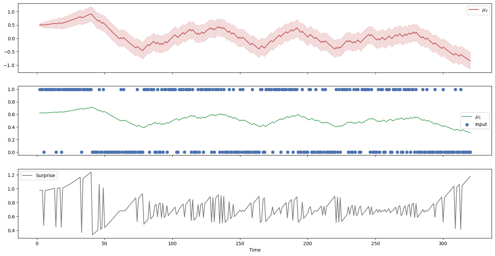
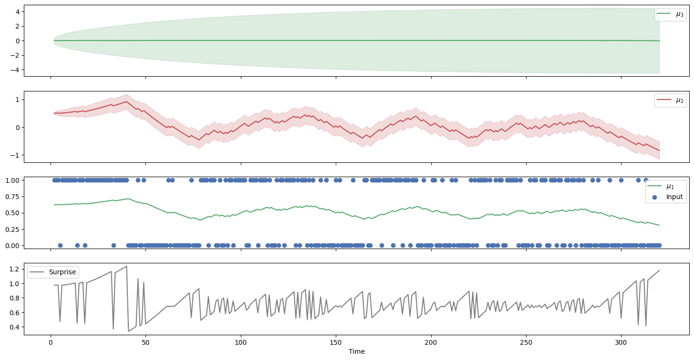

The binary Hierarchical Gaussian Filter#
import jax.numpy as jnp
from ghgf.model import HGF
from ghgf import load_data
import seaborn as sns
No GPU/TPU found, falling back to CPU. (Set TF_CPP_MIN_LOG_LEVEL=0 and rerun for more info.)
Imports#
Import binary responses from [Iglesias et al., 2013].
timeserie = load_data("binary")
# Format the data input accordingly (a value column and a time column)
data = jnp.array([timeserie, jnp.arange(1, len(timeserie) + 1, dtype=float)]).T
Using a two-levels model#
Create the model#
two_levels_hgf = HGF(
n_levels=2,
model_type="binary",
initial_mu={"1": .0, "2": .5},
initial_pi={"1": .0, "2": 1e4},
omega={"1": None, "2": -6.0},
rho={"1": None, "2": 0.0},
kappas={"1": None},
eta0=0.0,
eta1=1.0,
pihat = jnp.inf,
)
Creating a binary Hierarchical Gaussian Filter with 2 levels (JAX backend).
Add data#
# Provide new observations
two_levels_hgf = two_levels_hgf.input_data(data)
Add 320 new binary observations.
Plot trajectories#
two_levels_hgf.plot_trajectories()

Using a three-level model#
Create the model#
three_levels_hgf = HGF(
n_levels=3,
model_type="binary",
initial_mu={"1": .0, "2": .5, "3": 0.},
initial_pi={"1": .0, "2": 1e4, "3": 1e1},
omega={"1": None, "2": -6.0, "3": -2.0},
rho={"1": None, "2": 0.0, "3": 0.0},
kappas={"1": None, "2": 1.0},
eta0=0.0,
eta1=1.0,
pihat = jnp.inf,
)
Creating a binary Hierarchical Gaussian Filter with 3 levels (JAX backend).
Add data#
three_levels_hgf = three_levels_hgf.input_data(data)
Add 320 new binary observations.
Plot trajectories#
three_levels_hgf.plot_trajectories()
